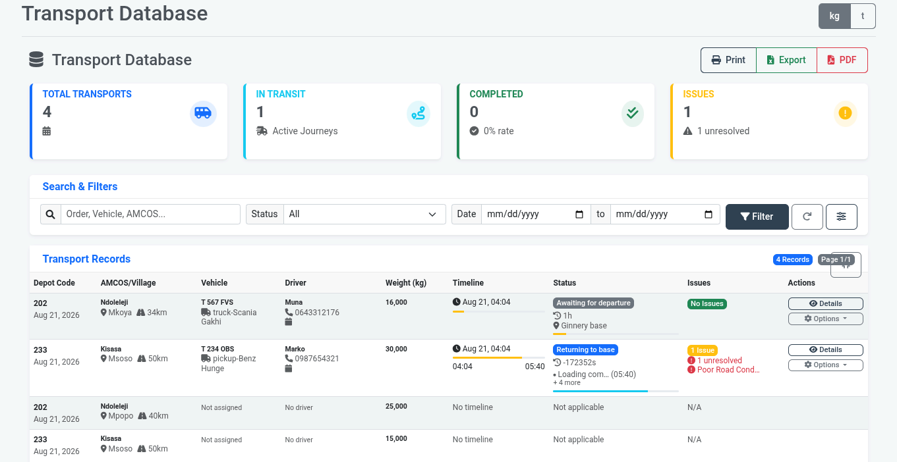
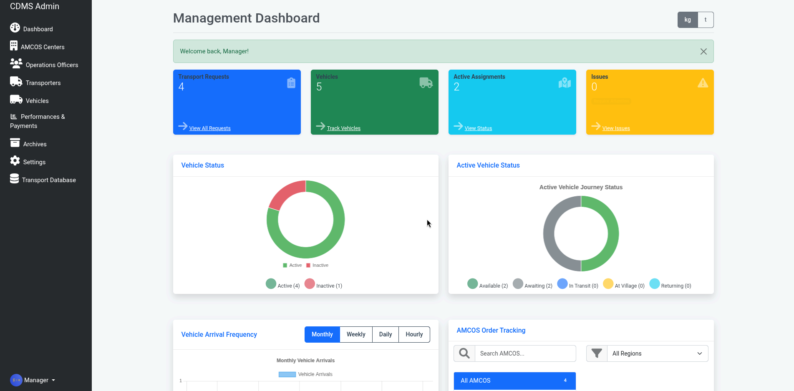
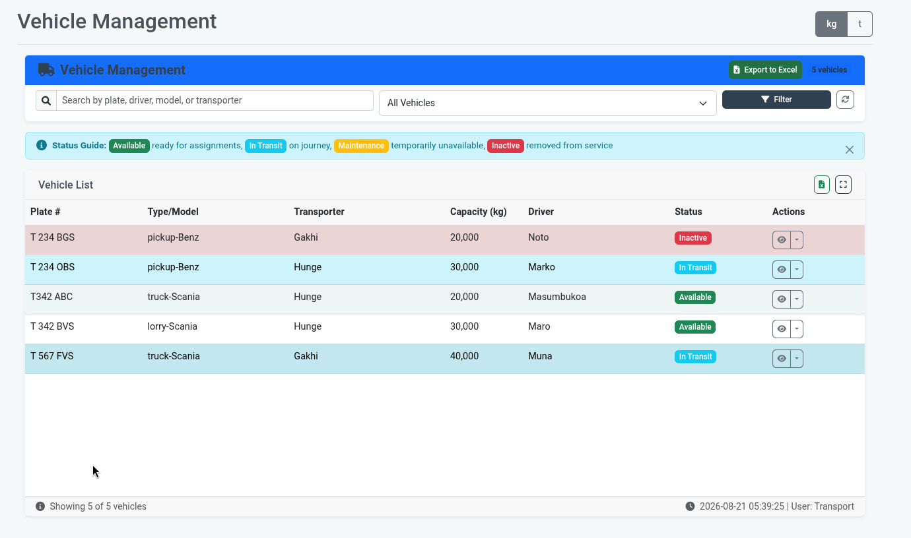
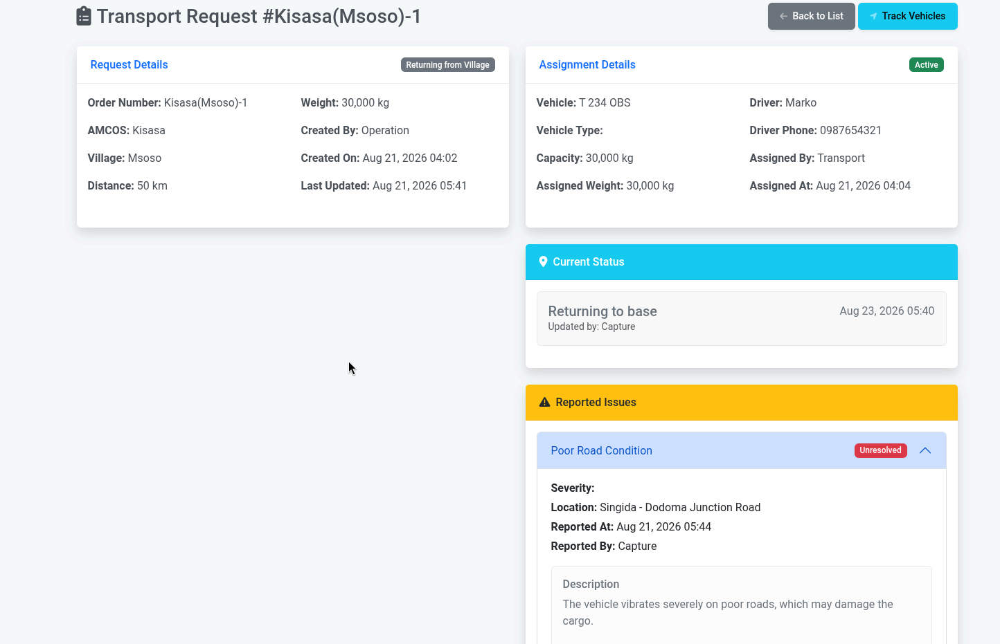
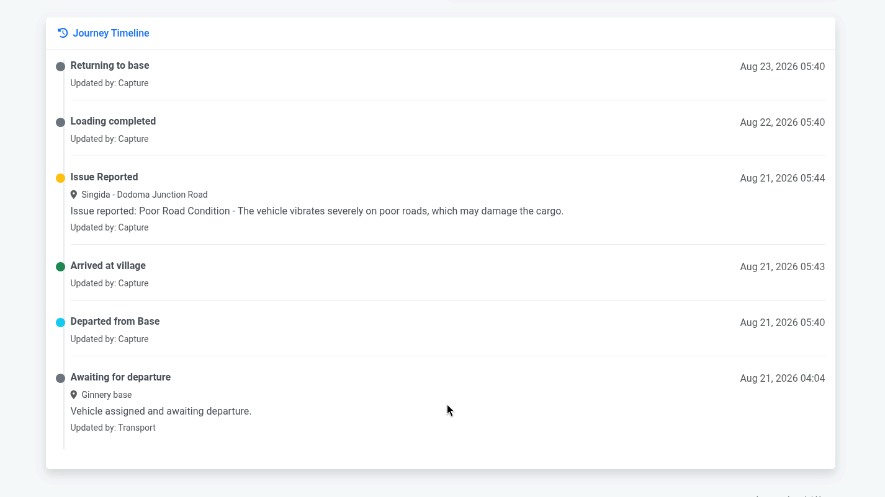
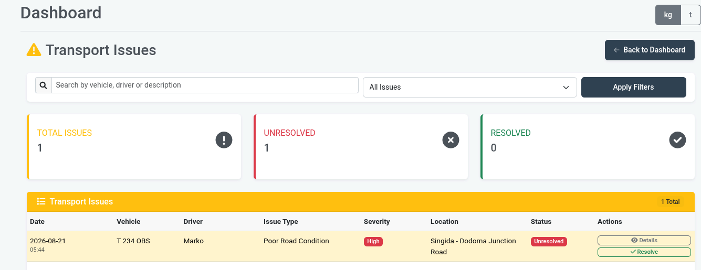
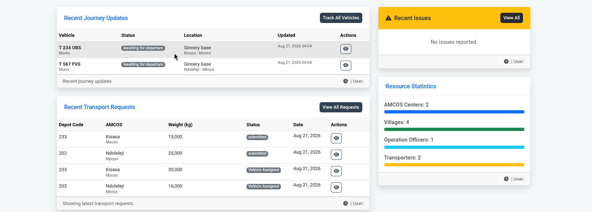
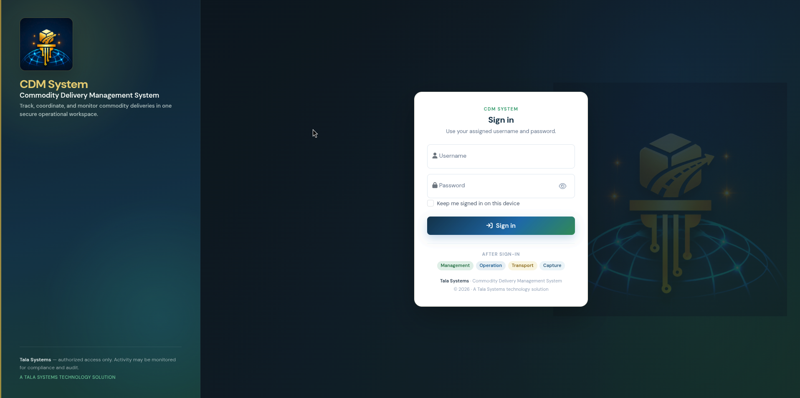

06
Transport database
Structured transport records provide a foundation for operational information and retrieval.

Operational System · Alliance Ginneries Limited
A digital system designed to support commodity delivery operations through structured workflows, tracking and operational visibility.
Commodity delivery, connected.
Meet CDM System
CDM System brings the operational journey into one structured digital environment—giving teams a clearer way to coordinate transport, follow journeys and understand delivery activity.

The management dashboard brings operational indicators and delivery activity together so decision-makers can see what is happening across the system.




How it works
The system follows the operational journey as a sequence of connected activities, helping teams move from a request to clearer management visibility.
A delivery need enters the structured workflow.
Operational teams coordinate the vehicle for the request.
The assigned transport progresses through the delivery journey.
Journey status and operational issues can be recorded and followed.
Operational activity becomes easier to review from a management perspective.
Inside the system
Beyond the headline dashboard, CDM System provides interfaces for the individual activities that make the delivery workflow work.
Structured transport records provide a foundation for operational information and retrieval.

Management-oriented summaries help turn operational records into a clearer picture of activity.

A dedicated entry point establishes the product identity before users reach the operational workspace.

Capabilities
Organize requests and vehicle assignments around the delivery workflow.
Keep operational journey information visible as deliveries progress.
Maintain structured transport information and issue records.
Give management a clearer view of activity through summarized information.
Tala Systems role
CDM System represents Tala Systems' approach to building technology around real operational workflows—turning a delivery process into a structured digital experience.
CDM System
Interested in CDM System or a similar operational solution for your organization?
Request a Demo ↗